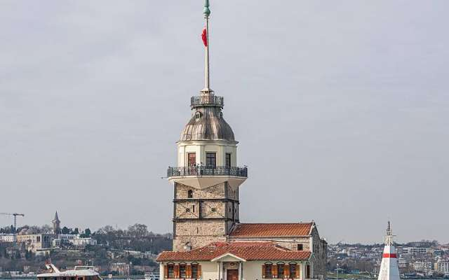
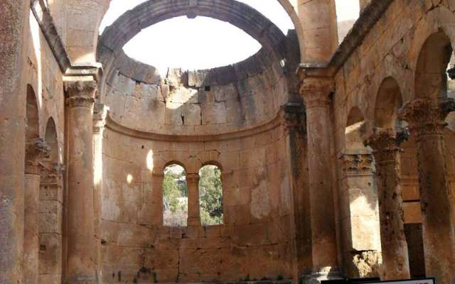

بيزنطة والمسيحية المبكرة. من القسطنطينية إلى كبادوكيا ومن طرابزون إلى قبرص، ينتشر الإرث البيزنطي من كنائس وفسيفساء وأديرة في كل أنحاء الأناضول. في عام 330 نقل الإمبراطور الروماني قسطنطين العاصمة إلى بيزنطيون وأعاد تأسيسها باسم القسطنطينية. وبقيت الإمبراطورية الرومانية الشرقية، أي البيزنطية، أكثر من ألف عام، وانتهت بالفتح العثماني للمدينة عام 1453. وتُعدّ آيا صوفيا، التي بُنيت في عهد جستنيان في القرن السادس، علامة فارقة في تاريخ العمارة بقبتها الهائلة، وتُظهر فسيفساء القصر الكبير وكنيستي خورا وباماكاريستوس (فتحية) ذروة هذا الفن في إسطنبول. كانت الأناضول من أوائل الأراضي التي انتشرت فيها المسيحية. وتُعدّ كنيسة القديس بطرس في أنطاكية من أقدم الكنائس المعروفة، وفي طرسوس آثار القديس بولس، وفي أفسس القديس يوحنا، وفي دمره القديس نيقولاوس، وفي سيليفكه القديسة تقلا. وكان المجمع المسكوني الأول المنعقد في نيقية (إزنيق) عام 325 حدثًا تأسيسيًا في تاريخ المسيحية. ويُظهر دير سوميلا في طرابزون ودير ألاهان في مرسين ودارا في ماردين ودير القديس برنابا في قبرص اتساع العالم البيزنطي، بينما تُعدّ آني في قارص وأكدامار في وان من روائع العمارة الأرمنية في الحقبة نفسها.
من القسطنطينية إلى كبادوكيا ومن طرابزون إلى قبرص، ينتشر الإرث البيزنطي من كنائس وفسيفساء وأديرة في كل أنحاء الأناضول.
في عام 330 نقل الإمبراطور الروماني قسطنطين العاصمة إلى بيزنطيون وأعاد تأسيسها باسم القسطنطينية. وبقيت الإمبراطورية الرومانية الشرقية، أي البيزنطية، أكثر من ألف عام، وانتهت بالفتح العثماني للمدينة عام 1453. وتُعدّ آيا صوفيا، التي بُنيت في عهد جستنيان في القرن السادس، علامة فارقة في تاريخ العمارة بقبتها الهائلة، وتُظهر فسيفساء القصر الكبير وكنيستي خورا وباماكاريستوس (فتحية) ذروة هذا الفن في إسطنبول.
كانت الأناضول من أوائل الأراضي التي انتشرت فيها المسيحية. وتُعدّ كنيسة القديس بطرس في أنطاكية من أقدم الكنائس المعروفة، وفي طرسوس آثار القديس بولس، وفي أفسس القديس يوحنا، وفي دمره القديس نيقولاوس، وفي سيليفكه القديسة تقلا. وكان المجمع المسكوني الأول المنعقد في نيقية (إزنيق) عام 325 حدثًا تأسيسيًا في تاريخ المسيحية.
ويُظهر دير سوميلا في طرابزون ودير ألاهان في مرسين ودارا في ماردين ودير القديس برنابا في قبرص اتساع العالم البيزنطي، بينما تُعدّ آني في قارص وأكدامار في وان من روائع العمارة الأرمنية في الحقبة نفسها.
أين تشاهد هذا العصر
 متحف آيا صوفيا للتاريخ والتجربةإسطنبول
متحف آيا صوفيا للتاريخ والتجربةإسطنبول متحف فسيفساء القصر الكبيرإسطنبول
متحف فسيفساء القصر الكبيرإسطنبول متحف فتحيةإسطنبول
متحف فتحيةإسطنبول
برج الفتاةإسطنبولبازيليكا بحيرة إزنيكبورصة موقع بازيليكا القديس يوحنا (أياسولوك)إزمير
موقع بازيليكا القديس يوحنا (أياسولوك)إزمير متحف القديس نيقولاوس التذكاريأنطاليا
متحف القديس نيقولاوس التذكاريأنطاليا متحف القديس بطرس التذكاريهاتاي
متحف القديس بطرس التذكاريهاتاي بئر القديس بولس في طرسوسمرسين
بئر القديس بولس في طرسوسمرسين موقع آيا تكلا الأثري في سيليفكهمرسين
موقع آيا تكلا الأثري في سيليفكهمرسين
دير علاهانمرسين دير سوميلاطرابزونكنيسة القديسة حنة (آيفاسيل الصغيرة)طرابزون
دير سوميلاطرابزونكنيسة القديسة حنة (آيفاسيل الصغيرة)طرابزون موقع آني الأثريقارصمتحف أكدامار التذكاريوان
موقع آني الأثريقارصمتحف أكدامار التذكاريوان موقع دارا الأثريماردين
موقع دارا الأثريماردين دير القديس برناباغازي ماغوسا (فاماغوستا)
دير القديس برناباغازي ماغوسا (فاماغوستا)🎓 اختبر معلوماتك
1. في أي عام أُعيد تأسيس القسطنطينية عاصمةً؟
2. في عهد أي إمبراطور بُنيت آيا صوفيا؟
3. أين انعقد المجمع المسكوني الأول عام 325؟
4. أي دير يتشبث بجرف صخري في طرابزون؟